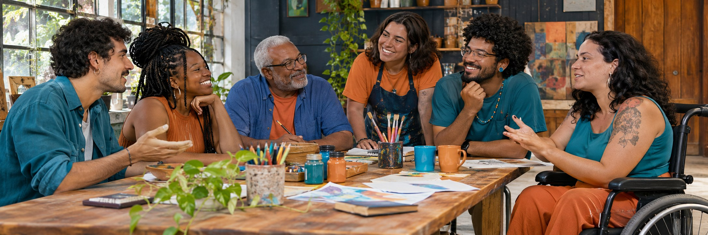
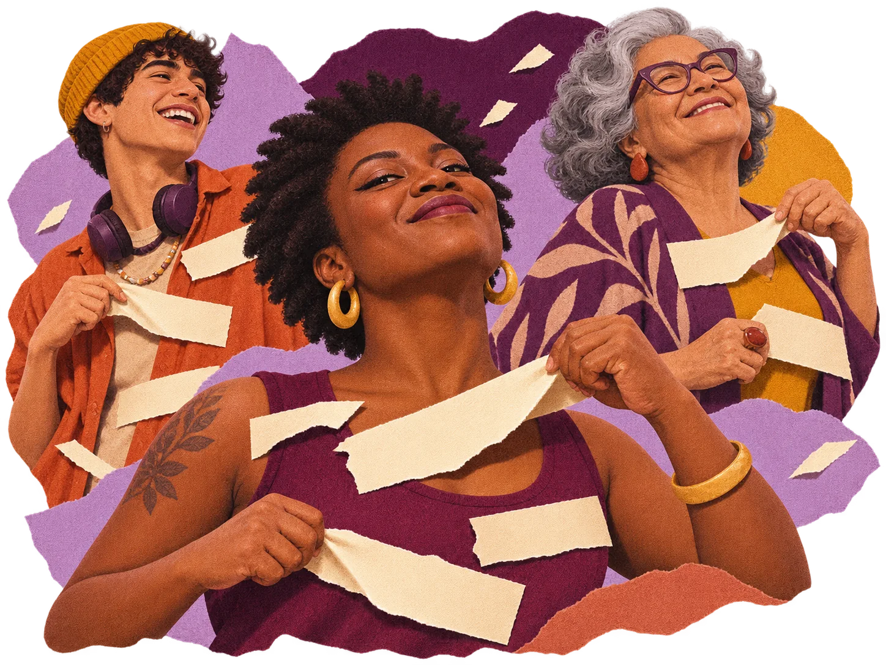

Estereótipo
Uma ideia generalizada sobre um grupo, que ignora as diferenças entre seus integrantes.
Exemplo de generalização
“Todo jovem é irresponsável.”

Para entender
São crenças ou generalizações sobre as características de um grupo. Elas colocam pessoas diferentes em uma mesma “caixinha”, com base na aparência, no gênero, na idade, na origem ou na condição social.
Segundo a APA, essas ideias simplificam nossa percepção, mas podem ser exageradas e difíceis de mudar, mesmo quando a realidade mostra algo diferente. [APA]
Uma ideia generalizada sobre um grupo, que ignora as diferenças entre seus integrantes.
“Todo jovem é irresponsável.”
Um julgamento ou uma atitude em relação a alguém antes de conhecer suas características individuais.
Desconfiar da capacidade de alguém apenas por ser jovem.
Uma ação que trata uma pessoa de forma injusta por pertencer, ou parecer pertencer, a determinado grupo.
Excluir uma pessoa de uma oportunidade apenas por sua idade.
Desde a infância, aprendemos formas de interpretar o mundo com a família, a escola, os meios de comunicação e as pessoas ao nosso redor. O cérebro organiza informações em categorias, mas os valores que atribuímos a elas são aprendidos socialmente. E aquilo que aprendemos também pode ser repensado. [APA]
No dia a dia
Estereótipos aparecem em diferentes situações. Abra os cartões para conhecer exemplos e descobrir outra forma de olhar.
Quando expectativas sobre gênero limitam escolhas e oportunidades.
O rótulo: “Essa profissão não é para mulheres.”
Interesses e habilidades não são definidos pelo gênero. Todas as pessoas devem ter a oportunidade de escolher seu caminho. [UNESCO]
Quando a cor da pele ou a etnia vira uma suposição sobre quem alguém é.
O rótulo: supor a inteligência ou o comportamento de alguém por sua cor ou etnia.
Características raciais não definem inteligência, personalidade ou caráter. Conheça a pessoa e reconheça sua história.
Quando a idade é usada para presumir capacidade, interesse ou responsabilidade.
O rótulo: “Pessoas mais velhas não aprendem tecnologia.”
É possível aprender em diferentes fases da vida. Experiência, acesso e oportunidades variam de pessoa para pessoa.
Quando uma deficiência é usada para definir o valor ou toda a capacidade de alguém.
O rótulo: presumir que uma pessoa com deficiência é sempre dependente.
Esse tipo de preconceito é chamado capacitismo. Respeitar a autonomia e garantir acessibilidade ajuda a remover barreiras. [MDHC]
Quando o sotaque, o lugar onde alguém vive ou sua renda vira um julgamento.
O rótulo: “Dá para saber o caráter de alguém pelo bairro onde mora.”
O lugar de origem e a condição financeira não definem o caráter nem o potencial de uma pessoa.
Podem contribuir para a exclusão, restringir oportunidades e influenciar escolhas. Ouvir repetidamente que uma profissão ou atividade “não é para pessoas como você” pode limitar caminhos antes mesmo de serem explorados. [APA]
Um olhar para o Brasil
Dados ajudam a reconhecer a diversidade e a discutir desigualdades. Conheça três recortes de pesquisas do IBGE, com seus anos de referência.
39,3%
Um retrato da participação feminina nas posições de liderança no Brasil.
IBGE · Estatísticas de gênero (PDF, abre em nova aba)69,8%
Uso nos três meses anteriores à entrevista. A idade não resume a relação de alguém com a tecnologia.
IBGE · PNAD Contínua TIC (PDF, abre em nova aba)14,4milhões
Equivalente a 7,3% da população de 2 anos ou mais. Resultados preliminares da amostra do Censo 2022.
IBGE · Censo Demográfico (abre em nova aba)Cada indicador tem um recorte próprio. Esses números descrevem grupos e contextos; não definem a capacidade de uma pessoa nem demonstram, isoladamente, as causas das desigualdades.
Agora é com você
Algumas frases parecem comuns. Mas será que fazem sentido? Leia, escolha uma resposta e descubra o que está por trás de cada ideia.
Leia a afirmação:
Escolha uma das opções para ver a explicação.
Da reflexão à atitude
A mudança começa nas pequenas escolhas. Ouvir, aprender e repensar o próprio comportamento são atitudes que abrem espaço para outras histórias.

Antes de repetir uma ideia, pergunte: “Eu conheço essa pessoa ou estou fazendo uma generalização?”
Busque fontes confiáveis, confira o contexto e amplie suas referências. A educação ajuda a desafiar preconceitos. [UNESCO]
Escute pessoas com vivências diferentes das suas. Cada indivíduo tem interesses, habilidades e experiências próprios.
Evite espalhar rótulos, piadas e comentários discriminatórios. Questione com respeito as ideias que tratam um grupo inteiro como se todos fossem iguais.
Pessoas são mais do que rótulos.
Conheça antes de julgar.
Para continuar aprendendo
Referências utilizadas no conteúdo e nos dados.
Os links abrem em uma nova aba.
Conhecer diferentes histórias e buscar informação confiável são formas de ampliar o nosso olhar.